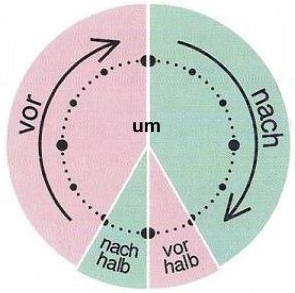

Wie spät ist es?
Wieviel Uhr ist es?

Es ist 12 Uhr (zwölf Uhr) - Сейчас 12 часов
Es ist 12 Uhr 10 Minuten (zwölf Uhr zehn Minuten) – Сейчас 12 часов 10 минут.
Halb acht – половина восьмого (7:30)
Halb neun – половина девятого (8.30)
Halb zehn – половина десятого (9.30)
Fünf Minuten vor sieben – 6.55 (дословно: пять минут до семи)
Fünf Minuten nach sieben – 7.05 (дословно: пять минут после семи)
Viertel vor sieben – 6.45 (дословно: пятнадцать минут до семи, или без пятнадцати семь)
Viertel nach sieben – 7.15 (дословно: пятнадцать минут после семи, или семь пятнадцать)
Genau (точно):
Genau sieben – 7.00
Uhr – это час, который показывают часы: Es ist 8 Uhr. – Сейчас 8 часов.
Но если Вы хотите сказать о продолжительности, тогда Вам понадобится слово Stunde: Ich arbeite 8 Stunden. – Я работаю 8 часов.
die Woche (-n) неделя
Montag - понедельник
Dienstag - вторник
Mittwoch - среда
Donnerstag - четверг
Freitag - пятница
Samstag/Sonnabend - суббота
Sonntag - воскресенье
der Monat (-e) месяц
Januar - январь
Februar - февраль
März - март
April - апрель
Mai - май
Juni - июнь
Juli - июль
August - август
September - сентябрь
Oktober - октябрь
November - ноябрь
Dezember - декабрь
Время года
Der Frühling - весна
der Herbst - осень
der Sommer - лето
der Winter - зима